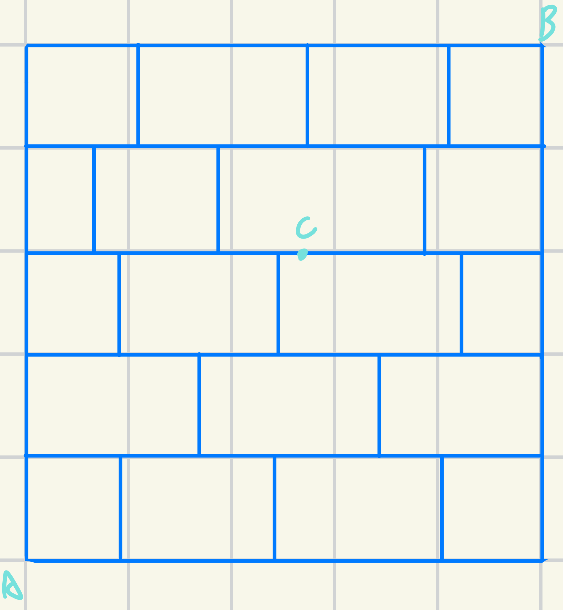

排列#
Note
黑板上排列組合，你捨得解開嗎？🎤
我：就算我想解但是我也解不開啊啊啊
直線排列#
今天有三個人排隊要點麥當勞，請問他們有幾種站法？
我們先叫那三個人ABC，那他們在站的時候：
第一個人有三個選擇(123)，第二個有兩個，第三個只有一個
然後再用乘的把它乘起來(忘記的話請看 這裡 )
也就是說他有 \(3\times 2\times 1 = 6\) 種站法
有一天你請朋友幫你買麥當勞的時候，他說在場有n個人，他問你說這群人有幾種排法 這時候我們可以理解為
第一個人有n個位置可以站,第二個n-1,第三個n-2…以此類推，然後再把它乘起來，這時，我們可以寫成
或者是 \(n!\) ⬅看起來清爽多了
Note
當你要表示1*2*3*4…*n可以寫成n!
排列的神奇公式#
在你回答你的朋友在n個人有幾種排法之後，他又很機O的問說，那五個人抓三個有幾種排法呢？
這時候可以想成有三個空格要選人，長得像是這樣
「 」「 」「 」
第一個框框在選人的時候有五個人可以選，所以第一個框框寫5，第二個框框剩4個，第三個框框剩三個，所以總共的排法有 \(5\times 4\times 3 = 60\) 種排法
他又問說，那n取m個人呢？
也就是說，我們現在有m個框框要從n個人裡面挑把他塞進去，也就是說可以寫成 \(m(m-1)(m-2)...(m-n)\) ，用數學的方式紀錄就是
Note
這個東東也可以理解成從m開始往下乘n個數字，然後我們定義 \(P_{0}^{n} = 1\)
有相同物的排列#
請問上圖7個蜘蛛人分成
3 1 3
時，分別有幾種排法
我們先順時針把它編號abcdefg，這時他們的排法可能有這些
abcdefg
acbdegf
adebfeg
...
我們可以用這種方式把它算出來
總共有140種。
我們把它公式化之後變成
其中
n = 總共的目標數
an = 第n組的人數
Note
因為1!=1所以通常會省略掉
重複排列#
今天你拿到了一個4位數密碼的行李箱，請問他總共有多少種可能的密碼？
密碼總共有數字0~9總共10種，然後有4個洞要填
「 」「 」「 」「 」
第一個洞有10個選擇，第二個洞也有10種…以此類推，所以可以簡化成 \(10\times 10\times 10\times 10 = 10^4 = 10000\) 種 密碼
Note
假設今天有m位密碼，每位密碼有n個選擇，可以寫成 \(n^m\) 種
東西選人跟人選東西#
這關係到次方的關係，假設今天有五個人要住三間房，在任意分的情況下有 \(3^5=243\) 種選擇。
Note
算這種東西的時候可以想成是 \(被選的^{選的}\)
小練習#
排排站時間#
今天有ABCDEFG等共六人要一起拍照，其中AB是生仇大恨所以不能站在一起，然後C因為個人因素所以不能站在第三個，請問這樣的話有多少方法數可以用
Tip
這種不要什麼的題目用反面解會比較快
Note
總共有 \(6! = 720\) 種
我們先把AB黏在一起，這樣的話他們的方法數有
然後再讓C站第三個
(因為假設將C固定的話剩下人隨便排就有5!種，忘記的話請去看 直線排列 )
然後再算C站第三個而且AB黏在一起的情況
最後再用取捨原理算出來
站在一起拍照#
今天有4男3女站在一起要拍照，請問以下狀況分別有幾種？
- 都黏在一起
- 將三個女生視為一個個體排列，也就是5!=120
- 都分開來
- 先把男生排好友4!種排法再把女生放到5個空隙裡面( \(P^5_3\) )所以總共有 \(P^5_3 \times 4! = 1440\) 種
- 有一個落單 (額外知識點請見 這裡 )
- 一樣先把男生排成4!然後有一個要落單( \(C^3_2 \times 2!\) )所以有 \(4!\times C^3_2 \times 2! \times C^2_1 = 576\) 種
又要去吃麥當勞#
- 今天你與甲乙丙丁等六個朋友去吃麥當勞，因為剛好錢沒帶夠(太兩光了吧)，所以只有四個人能吃到漢堡，其中
- 甲不喜歡大麥克乙不喜歡麥香雞
Tip
在解這種「不要什麼」的東西的時候，用反面解(算宇集再用扣的)會直覺一些
然後再經過精密的計算
所以今天總共有620種吃漢堡的方式
走捷徑#

- 今天你進到一個小路裡面
- 經過C點且經過D點不過C點但是過D點過C點但是不過D點不過C跟D點
- 解法們
- (之後會用到)總共的方法數有(U) \(\frac{10!}{7!3!} = 120\) 種過C且過D有(B) \(\frac{3!}{2!}\times \frac{3!}{2!}\times\frac{4!}{3!} = 36\)不過C點但是過D點(也就是把C省略掉)(D) \(\frac{6!}{4!2!}\times \frac{4!}{3!} = 60\)過C點但是不過D點(也就是把D省略掉)(C) \(\frac{3!}{2!}\times \frac{7!}{5!2!} = 63\)不過C跟D的方法有 \(n(C\cup D) = n(C) + n(D) - n(C \cap D) = 87\) 種 ，再用全部減掉它變成 120-87=33種
為什麼吃麥當勞吃到後台去了#
{kind=link}
一個餐點在製作時需要經過很多步驟，其中最重要的一個步驟就是QC(品質檢驗)，是每個產品的必經歷程，今天一個大麥克從這個生產線出發， 經過C點(品質檢驗點)之後才能出餐，那這樣的話他有多少路線可以跑？
Note
框框不算，不能走回頭路
先解第一層跟第二層
- 再看C點前後的狀況
假設走左邊兩條(也就是只能往右彎)
\[2\times 1 \times 3\]假設走右邊一條(也就是只能往左彎)
\[1\times 2\times 3\]
最後再把它算出來